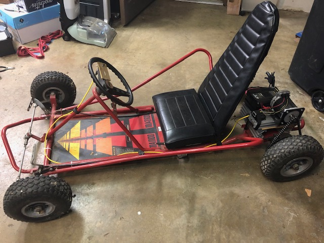

A (hopefully) short project to create a 3D printed cycloidal drive for an electric go kart.
About a year ago, I acquired the go kart my wife used as kid. It had a 10 hp engine and substial top speed. Far too powerful for my young son. I used an old teknic servo motor and converted it to an electric go kart. The servo motor doesn't have the torque to push my son up any grade or through the grass. I'd like to design a cycloidal gearbox to increase the torque. I may find that 3D printed parts don't cut it, but we'll cross that bridge when we get to it.
